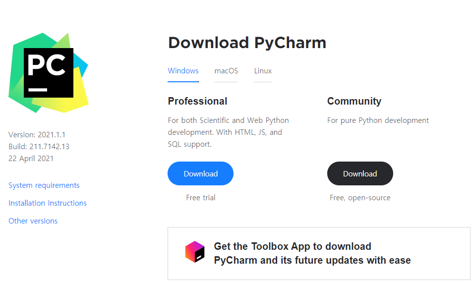

PyCharm 설치
설치 완료 시간 : 5~10분 정도
통합 개발 환경 IDE(Integrated Development Environment) 인 PyCharm을 사용해 보겠습니다.
파이썬용 IDE에는 다음과 같은 것이 있습니다.
PTVS(Python Tools Visual Studio) - 비주얼 스튜디오 기반
PyDev - 이클립스 기반
JetBrains 의 PyCharm - 인기상승.
다운로드 링크
1) PyCharm 설치 프로그램 다운로드
01 PyCharm 다운로드 페이지로 이동 후, 프로그램을 내려받는다.
PyCharm다운로드 페이지 : https://www.jetbrains.com/pycharm/download//#section=windows
Community 버전과 Professional 버전이 있습니다.
두가지의 차이는 유료, 무료의 차이가 있습니다.
Professional 이 더 많은 기능이 담긴 유료버전이고, Community가 무료버전입니다.

Community 의 Download 버튼을 선택하면 프로그램 내려받기가 진행됩니다.
02 PyCharm Community 버전을 다운로드가 진행됩니다.

다운로드 완료 후, 바로 프로그램을 더블클릭해서 실행해도 되고, 다운로드 된 장소로 이동하여 해당 프로그램을 실행해도 됩니다.
03 다운로드된 프로그램을 실행합니다.
다운로드된 프로그램을 마우스 더블 클릭(두번 선택 or 한번석택)하여 프로그램을 설치를 진행합니다.

04 아래와 같이 진행합니다.
설치 시작 메시지 입니다. 'Next >'을 선택 후, 다음으로 진행합니다.

(그림 4-1 설치시작)
설치 위치 지정 화면입니다. 기본 설정을 그대로 사용하겠습니다.
'Next >'을 선택 후, 다음으로 진행합니다.

(그림 4-2 설치위치 지정)
설치 옵션을 지정하는 화면입니다. 32bit, 64bit 설정입니다.
제어판에서 32bit인지, 64bit인지 확인이 가능합니다.
Create associatiions : .py 파일에 대해 PyCharm을 사용할지에 대한 항목입니다.
기본으로 두고, 'Next >'을 선택 후, 다음으로 진행합니다.

(그림 4-3 설치 옵션 지정)
시작 메뉴에 어떤 이름으로 설치할지 지정하는 화면입니다. 기본 설정으로 두고 다음으로 진행합니다.
'Install'을 선택 후, 다음으로 진행합니다.

(그림 4-4 시작 메뉴 이름 지정)
Install 선택 후, 다음과 같이 설치가 진행됩니다.
'Show details'을 선택하면 현재 설치가 진행되는 상세한 내용을 확인해 볼 수 있습니다.

(그림 4-5 설치 진행 화면)
설치가 완료되었습니다. 'Finish'을 선택하면 설치가 완료됩니다.
'Run PyCharm Community Edition' : 설치된 프로그램을 실행할 때는 여기를 체크해 주면 Finish 선택 후, 프로그램이 실행됩니다.
저희는 체크하지 않고 설치를 완료하겠습니다.

(그림 4-6 설치완료)
05 PyCharm 프로그램 실행하기
원도우 검색 후, 프로그램을 선택합니다.

(그림 5-1 실행하기)
첫 실행 시에 다음과 같이 표시됩니다.
기존의 설치된 기록이 있을 경우에 나타납니다.
완전 처음 설치일 경우, 나타나지 않습니다.
설정 내용을 가지고 올 것인가? 아니면 설정 내용을 가지고 오지 않겠는가? 화면입니다.
기본 설정으로 진행합니다. 'OK'을 선택합니다.

(그림 5-2 설정 파일 가져올지 지정)
프로젝트를 만들 수 있고, 기존의 폴더를 열수 있습니다.
여기에서 New Project를 선택하여 새로운 프로젝트를 만들겠습니다.

여러분이 만들 프로젝트(작업의 작은 단위)을 어디에 저장할지(Location)과 이를 이해시킬 프로그램을 지정하는 화면입니다.
Location : 위치
Interpreter : 우리가 작성한 코드를 이해시킬 프로그램(인터프리터)을 지정하기
프로젝트 이름과 장소를 정합니다. 기본으로 해도 됩니다.

(그림 5-3 Pycharm 기본 설정 )
아나콘다가 설치한 파이썬 프로그램을 이용하기 위해 아래와 같이 선택합니다.

(그림 5-3 Pycharm 기본 설정 )
아나콘다 기본 Python 프로그램을 선택합니다. 'OK'를 선택합니다.

(그림 5-3 Pycharm 기본 설정 )
'Create'를 선택합니다.

(그림 5-3 Pycharm 기본 설정 )
첫 실행화면입니다.
'Tip of the Day'는 간단한 PyCharm 사용자를 위한 설명입니다. 'Close'을 선택 후, 창을 닫습니다.

(그림 5-4 Pycharm 기본 화면)
'Run'을 선택하여 파이썬을 실행합니다.

(그림 5-5 파이썬 실행)

(그림 5-6 파이썬 실행 결과 확인)